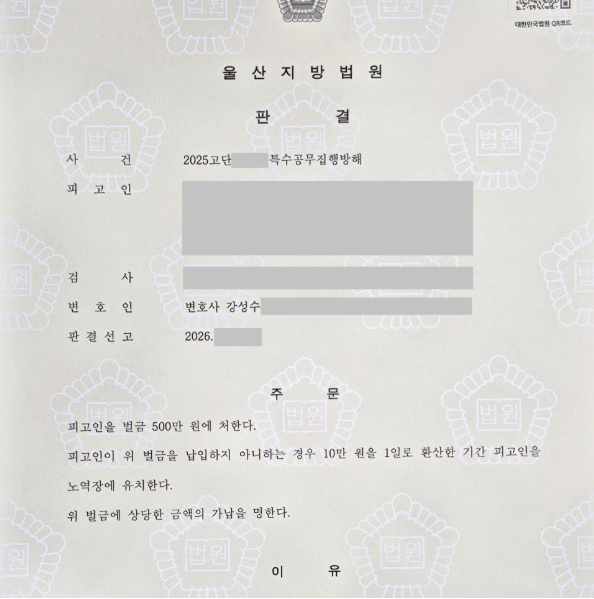

핵심 결과
술에 취한 상태에서 출동 경찰관과 실랑이가 있었습니다.
손에 들고 있던 물건이 경찰관 얼굴에 맞으면서 사건은 단순 폭행이 아니라 특수공무집행방해로 번졌습니다.
의뢰인에게는 과거 폭력 전과도 여러 차례 있었습니다.
실형 가능성을 배제하기 어려운 상황이었지만, 피해 경찰관과의 합의와 양형자료를 정리해 벌금 500만 원으로 사건을 마무리할 수 있었습니다.
| 구분 | 내용 |
|---|---|
| 사건 분야 | 특수공무집행방해 |
| 발생 경위 | 술에 취한 상태에서 출동 경찰관과 실랑이 |
| 문제 상황 | 손에 든 물건이 경찰관 얼굴에 맞음 |
| 불리한 사정 | 폭력 전과 다수, 실형 위험 |
| 주요 대응 | 피해 경찰관 합의, 단주 노력, 반성 자료, 재범 방지 자료 |
| 최종 결과 | 벌금 500만 원 |
사건 개요
의뢰인은 술을 많이 마신 상태였습니다.
감정이 격해진 상황에서 경찰관이 출동했습니다.
그 과정에서 실랑이가 생겼고, 의뢰인이 손에 들고 있던 물건이 경찰관의 얼굴에 맞았습니다.
이 사건은 단순 폭행으로 끝나기 어려웠습니다.
법적으로는 특수공무집행방해죄가 문제 되는 사안이었습니다.
공무집행 중인 경찰관을 상대로 한 범행입니다.
게다가 물건이 사용된 사안이어서 법원은 더 엄격하게 볼 수밖에 없습니다.
사건에서 가장 불리했던 부분
- 피해자가 일반인이 아니라 직무 수행 중인 경찰관이었습니다.
- 물건이 사용되어 특수공무집행방해로 평가될 수 있었습니다.
- 의뢰인에게 과거 폭력 전과가 여러 차례 있었습니다.
- 술로 인한 우발적 행동이라는 설명만으로는 부족했습니다.
이런 조건에서는 구속이나 실형 가능성을 가볍게 볼 수 없습니다.
왜 특수공무집행방해가 위험한가
공무집행방해 사건은 법원이 엄격하게 판단하는 범죄 중 하나입니다.
공권력에 대한 직접적인 침해로 보기 때문입니다.
특히 경찰관이 실제로 다쳤거나, 위험한 물건이 사용되었다면 사안은 더 무거워집니다.
단순히 “술에 취해서 그랬다”는 말만으로는 충분하지 않습니다.
재판부가 보는 것은 변명보다 재범 위험을 낮출 수 있는 구체적 변화입니다.
“술 때문이었다”는 말만으로는 부족합니다.
재판부는 실제로 무엇이 달라졌는지 봅니다.
단주 치료, 피해 회복, 반성의 과정, 재범 방지 계획이 자료로 정리되어야 합니다.
해결 전략
1. 형식적인 반성문보다 실제 변화부터 정리했습니다
반성문은 중요합니다.
하지만 어디서나 볼 수 있는 뻔한 문장으로는 설득력이 떨어집니다.
의뢰인이 왜 같은 문제가 반복되었는지, 술 문제를 어떻게 해결하려 하는지, 실제로 어떤 치료와 노력을 하고 있는지를 자료로 정리했습니다.
2. 피해 경찰관과의 합의를 끝까지 시도했습니다
공무수행 중 발생한 사건은 합의가 쉽지 않습니다.
피해 경찰관 입장에서도 쉽게 처벌불원 의사를 밝히기 어렵습니다.
그래서 직접적인 감정 호소가 아니라, 진심 어린 사과와 피해 회복의 의사를 조심스럽게 전달하는 방식으로 접근했습니다.
그 결과 처벌을 원하지 않는다는 취지의 합의서를 받을 수 있었습니다.
3. 벌금형 가능성을 재판부에 설득했습니다
전과가 있다는 점은 불리했습니다.
그래서 불리한 점을 숨기기보다 정면으로 다뤘습니다.
재범 방지 노력, 단주 치료, 가족 관계, 직장과 생활 기반, 피해 회복 결과를 함께 제시했습니다.
핵심은 “이번에는 실형이 아니라 벌금형으로도 재범 방지가 가능하다”는 점을 설득하는 것이었습니다.
| 대응 항목 | 준비한 내용 |
|---|---|
| 피해 회복 | 피해 경찰관과의 합의 및 처벌불원 취지 자료 |
| 반성 자료 | 사건 경위에 대한 구체적 반성과 재발 방지 다짐 |
| 단주 노력 | 술 문제 개선을 위한 치료와 생활 변화 자료 |
| 양형자료 | 가족 관계, 직장, 생활 기반, 재범 방지 계획 |
| 변론 방향 | 실형보다 벌금형으로도 충분히 교정 가능하다는 점 강조 |
결과
선고기일은 긴장감이 컸습니다.
사안 자체가 가볍지 않았고, 의뢰인에게 불리한 전력도 있었기 때문입니다.
하지만 재판부는 피해 회복이 이루어진 점, 반성 자료가 정리된 점, 재범 방지 노력이 확인된 점을 함께 보았습니다.
최종 결과
징역형 위험이 있었던 특수공무집행방해 사건에서 벌금 500만 원이 선고되었습니다.
의뢰인은 실형을 피하고 일상으로 돌아갈 수 있었습니다.
특수공무집행방해 사건에서 조심해야 할 점
특수공무집행방해 사건은 초기에 대응 방향을 잘못 잡으면 위험합니다.
억울함만 강조하면 반성하지 않는 태도로 보일 수 있습니다.
반대로 무조건 잘못했다고만 하면 사건의 구체적 경위가 제대로 설명되지 않을 수 있습니다.
중요한 것은 균형입니다.
잘못은 인정하되, 왜 실형까지는 과한지 자료로 설명해야 합니다.
피해 회복과 재범 방지 계획도 함께 정리해야 합니다.
결론
형사사건은 처음 대응이 중요합니다.
특수공무집행방해처럼 법원이 엄격하게 보는 사건은 더 그렇습니다.
피해자가 경찰관이고, 위험한 물건이 문제 되었고, 과거 전과까지 있다면 실형 위험은 현실적인 문제가 됩니다.
다만 사건마다 풀어낼 수 있는 지점은 있습니다.
피해 회복, 합의, 단주 노력, 반성 자료, 재범 방지 계획을 어떻게 구성하느냐에 따라 결과는 달라질 수 있습니다.
사무장·상담실장 없이 변호사가 직접 상담합니다
형사사건은 처음 단추가 중요합니다.
법무법인 우린은 사건 초기 상담부터 경찰 조사, 합의, 재판 대응까지 변호사가 직접 확인합니다.
특수공무집행방해처럼 실형 위험이 있는 사건이라면, 사건 기록과 증거자료를 먼저 정리해 대응 방향을 검토해야 합니다.
이 글은 일반적인 법률 정보 제공을 위한 자료이며, 개별 사건의 결과를 보장하지 않습니다. 구체적인 대응은 사실관계와 증거에 따라 달라질 수 있습니다.